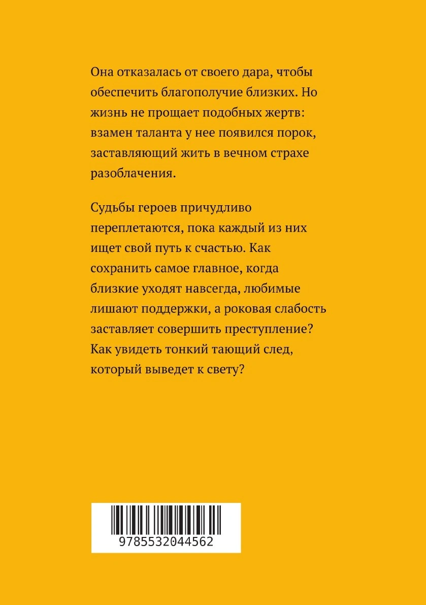
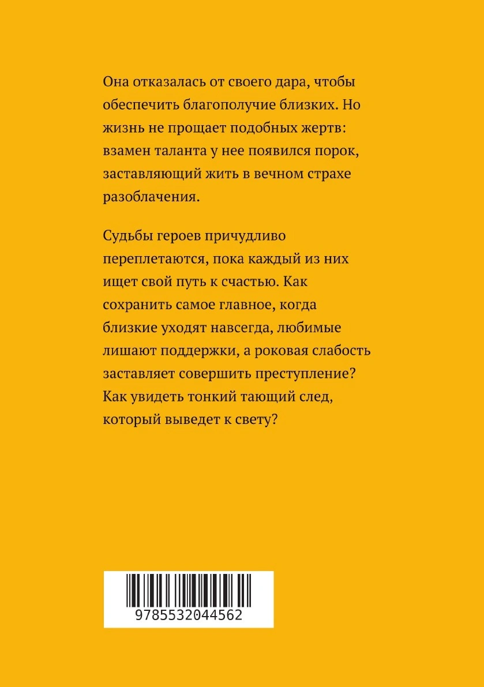
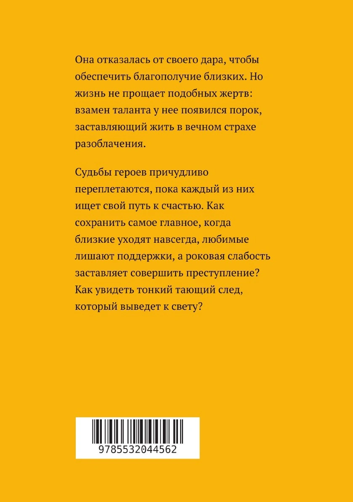
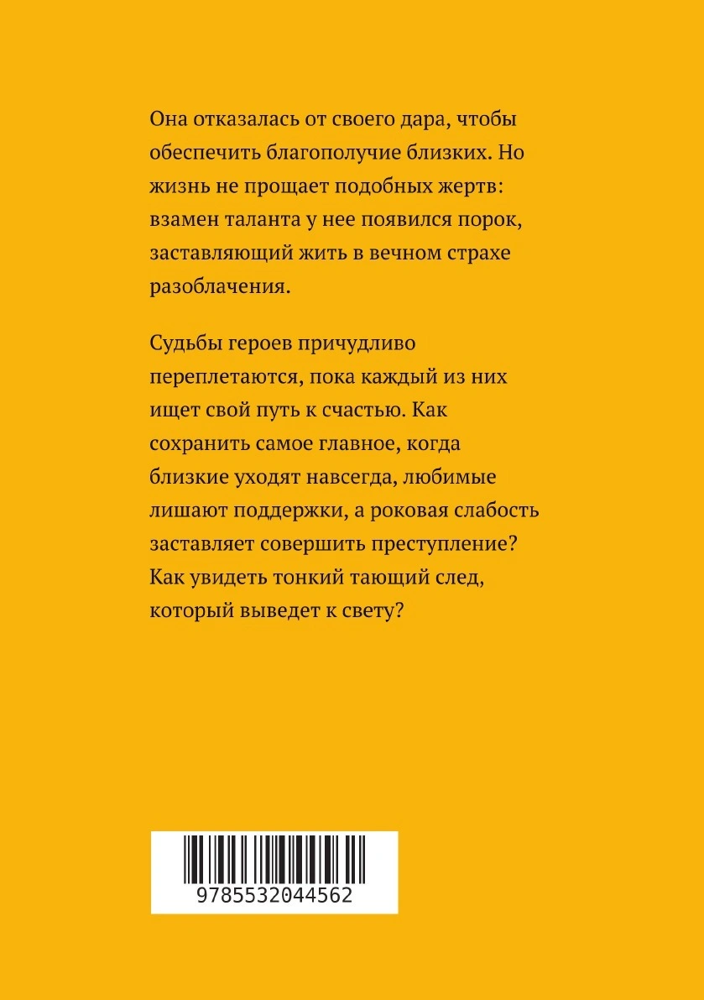

Объем: 210 стр.
Жанр: Современная русская литература, Триллеры
Она отказалась от своего дара, чтобы обеспечить благополучие близких. Но жизнь не прощает подобных жертв: взамен таланта у нее появился порок, заставляющий жить в вечном страхе разоблачения. Судьбы героев причудливо переплетаются, пока каждый из них ищет свой путь к счастью. Как сохранить самое главное, когда близкие уходят навсегда, любимые лишают поддержки, а роковая слабость заставляет совершить преступление? Как увидеть тонкий тающий след, который выведет к свету? Издательство: ЛитРес: Самиздат
Характеристики
Год выпуска:2020
Тип обложки:мягкая обложка
Автор на обложке: Наталья Лирник
Издатель:Литрес
Возрастные ограничения : 12+
Тип книги :Печать по требованию
Формат издания: 148x210
Количество страниц: 198
Язык издания: Русский
Предмет обучения: Литература
ISBN: 978-5-532-04456-2